Nº 0409 • SANTOS — SP • PREÇO DESTE EXEMPLAR: 1 PEDAÇO DE BOLO
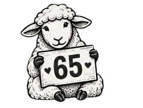
ENCONTRE AS OVELHAS
RÚBIA COMPLETA MAIS UMA VOLTA AO SOL!
Virginiana, corinthiana, mãe de dois, chefinha querida e dona
de uma trajetória de quatro décadas no INSS, Rúbia inicia
oficialmente um novo ciclo neste 04 de setembro.
Fontes próximas confirmam que a aniversariante continua
apresentando altos índices de personalidade, competência,
paciência e capacidade de resolver B.O.s que misteriosamente
aparecem em sua direção.
PREVISÃO PARA HOJE: 100% DE CHANCE DE BRILHO, DANÇA E COMEMORAÇÃO.
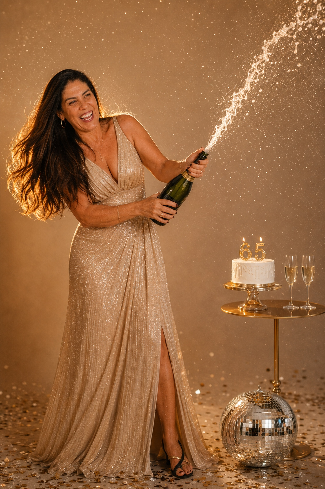
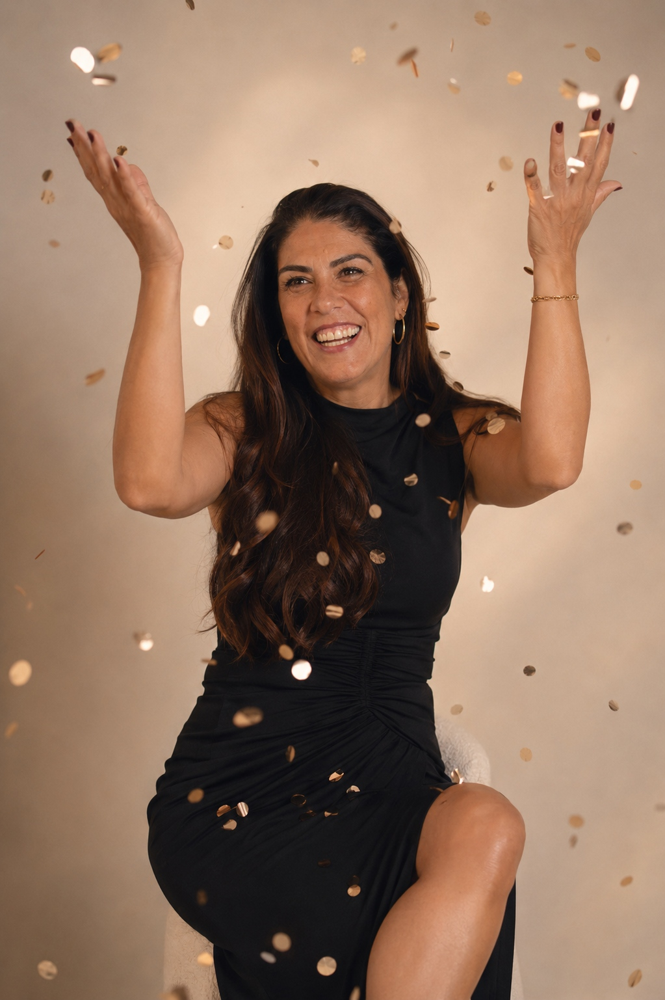
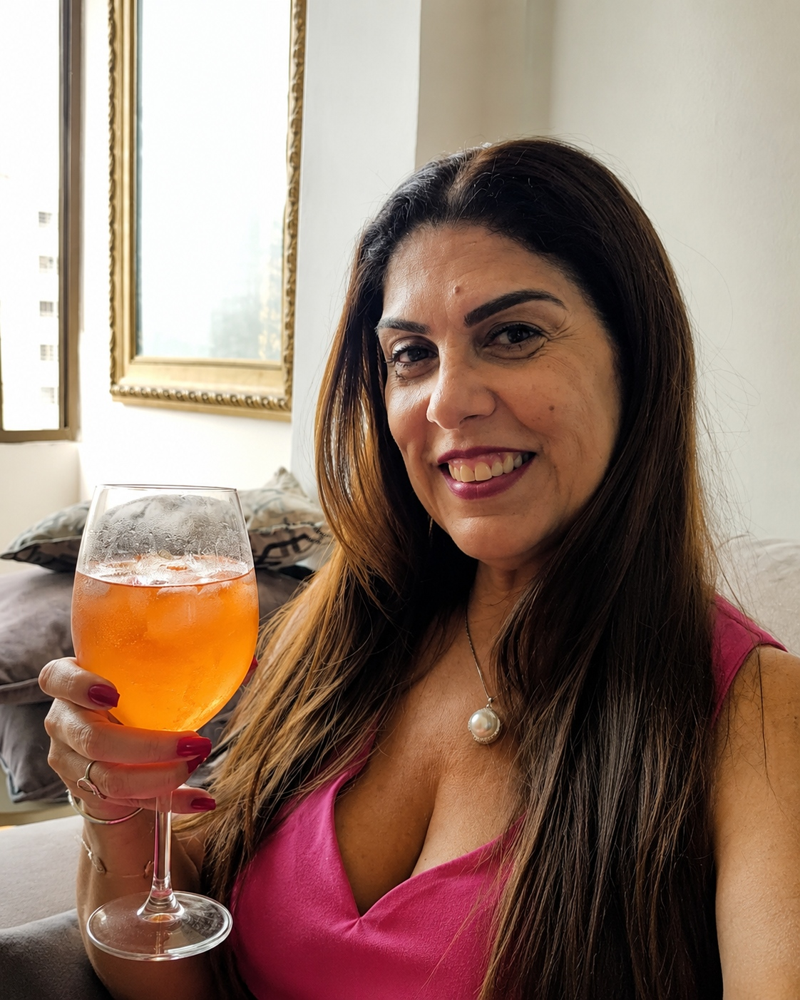
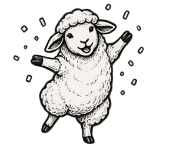
ARQUIVO CONFIDENCIAL • Nº 0409
QUEM É RÚBIA?
NOME
Rúbia Maria da Silva Ferreira Beltrão kkkk
*A redação confirma que esse definitivamente não é o nome dela.
NASCIMENTO
04 de setembro.
O ano foi omitido por decisão unânime da redação. Que indelicadeza perguntar.
SIGNO
Virgem ♍
TIME DO CORAÇÃO
Corinthians. 🖤🤍
MISSÃO MAIS IMPORTANTE
Mãe de dois meninos.
EXPERIÊNCIA PROFISSIONAL
40 anos de serviços prestados ao INSS, com dedicação e muitas histórias para contar.
ESTADO CIVIL
Em atualização...STATUS: CONSULTANDO BANCO DE DADOS
PROCESSO SELETIVO ATUAL
Em busca do cargo mais disputado desta edição:AMOR DA MINHA VIDA / MARIDO Nº 9
Processo seletivo em andamento.
SANTO ACIONADO EM EMERGÊNCIAS
São Longuinho.Especialidades conhecidas: objetos desaparecidos, situações aparentemente sem solução e, aparentemente, até vagas para estacionar.
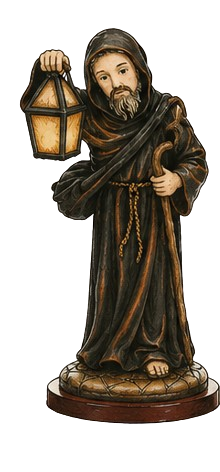
*Informações matrimoniais fornecidas por fontes que decidiram correr o risco de publicação.
DOC. 09-AANÁLISE VISUAL
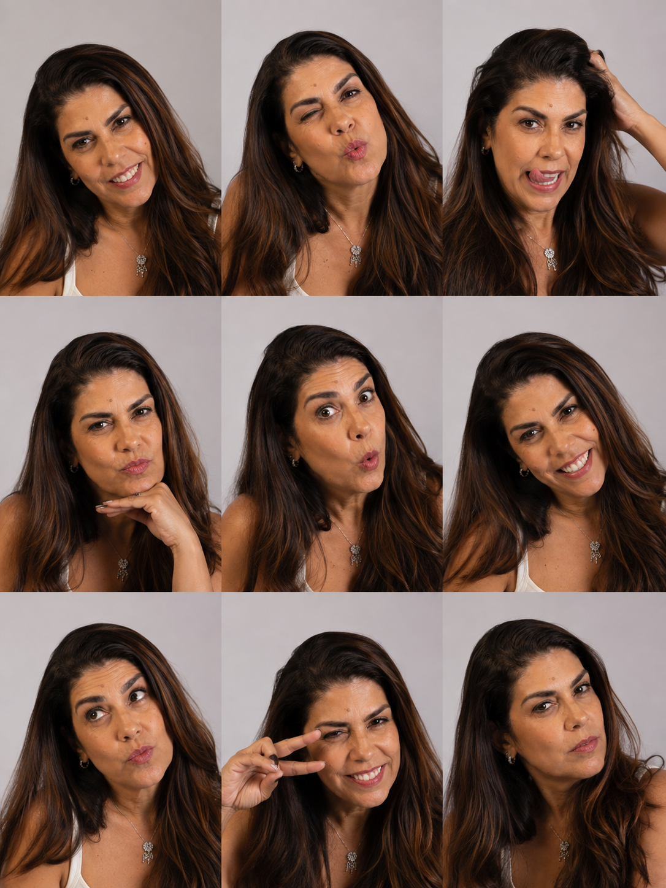
FICHA DE EXPRESSÕES — DOCUMENTO EXTRA
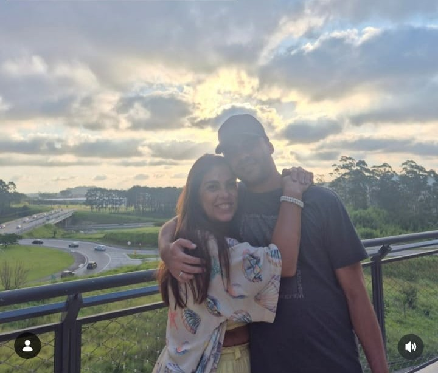
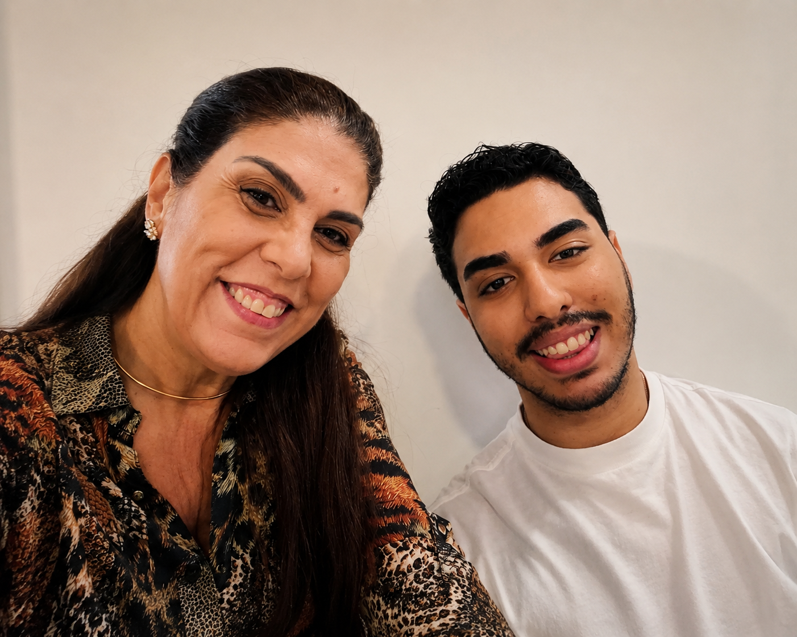
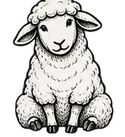
ARQUIVO RÚBIA TIMES
UMA VIDA EM REGISTROS
Algumas histórias precisam de muitas palavras.
Outras ficam registradas em um instante.
RT / FOTOARQUIVODOCUMENTO Nº 0409
+
FOTOGRAFIA PENDENTE
+
ARQUIVO 01 / 06
ELA
Virginiana por natureza, incrível por escolha!
REGISTRO PRESERVADO NO ARQUIVO RÚBIA TIMES
01 / 06
bé.
● PLANTÃO ESPORTIVO
CORINTHIANS CONTINUA SENDO O MELHOR TIME DO MUNDO*
Segundo Rúbia.
O que encerra definitivamente uma discussão que, aparentemente, nunca esteve aberta.
A comentarista Rúbia tem apenas uma crítica:
“O Corinthians só não faz gol.”
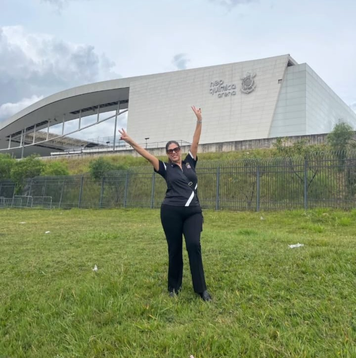
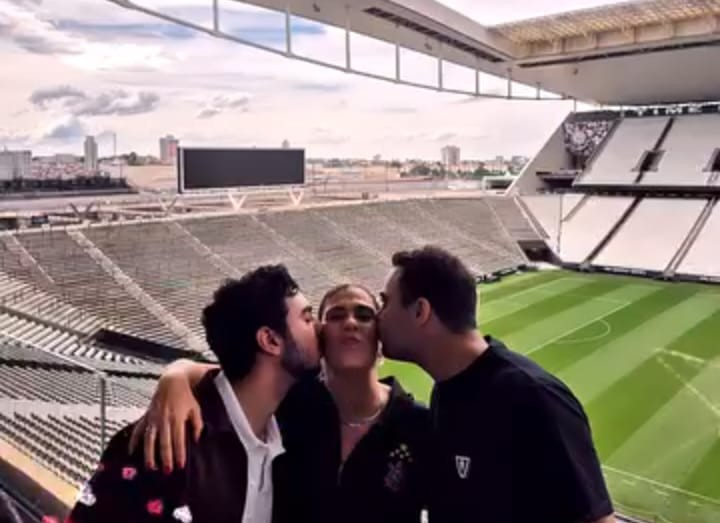
Rúbia com os dois filhos na Arena Corinthians.
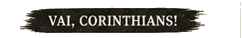
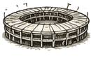
PESQUISA RÚBIA TIMES
AMOSTRA: 01
Resultado da pesquisa Rúbia Times
CORINTHIANS100%
OUTROS0%
Uhhh!
*Pesquisa realizada com uma única participante: Rúbia.
Margem de erro: segundo ela, nenhuma.
Nota da redação: não recomendamos contestar os resultados.
Ela tem cara de brava.
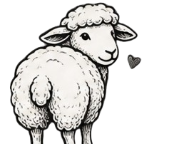
40 ANOS DE SERVIÇOS PRESTADOS AO INSS
E ainda contando.
40
40 ANOS • 4 DÉCADAS • MUITAS HISTÓRIAS
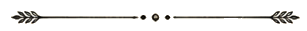
São quatro décadas construídas entre mudanças, desafios, aprendizados, responsabilidades e, principalmente, pessoas.
Uma trajetória profissional tão longa não é feita apenas de tempo. É feita daquilo que deixamos pelo caminho: conhecimento compartilhado, problemas resolvidos, histórias vividas e pessoas que fizeram parte delas.
Algumas trajetórias são contadas em anos. Outras, pelo impacto que deixam nas pessoas.
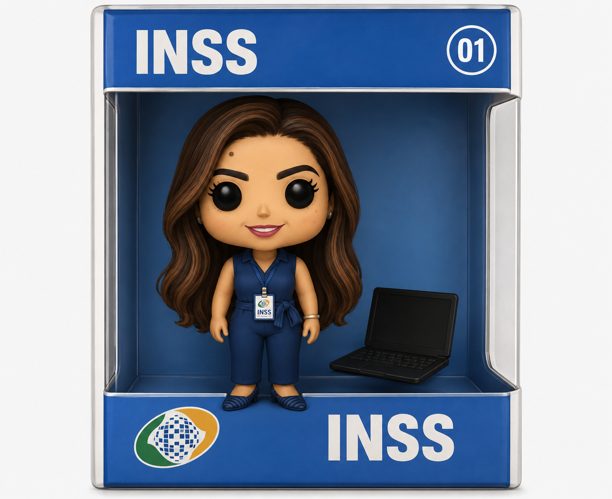
ANEXO 01 • MINIATURA INSS
DOCUMENTO ANEXADOARQ. INSS / 040
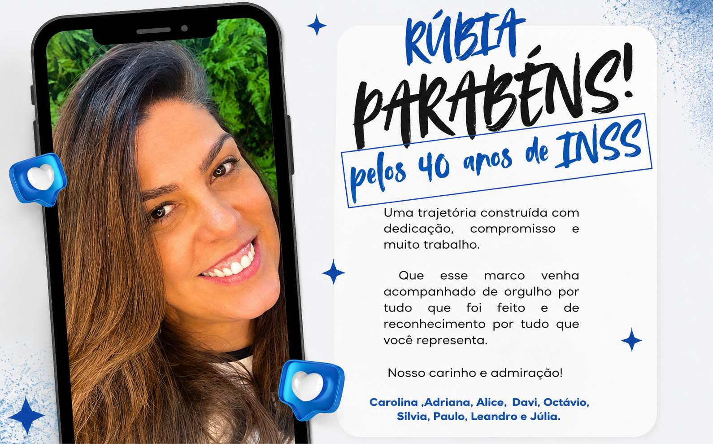
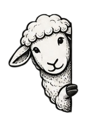
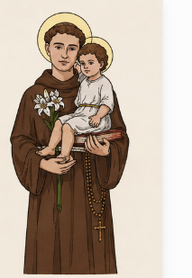
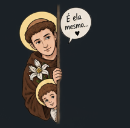
OPORTUNIDADES
PROCURA-SE CANDIDATO PARA MARIDO Nº 6
VAGAS: 01
Segundo fontes não oficiais, já existe lista de espera.
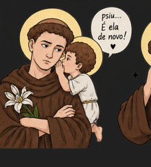
REQUISITOS MÍNIMOS
Gostar de uma virginiana perfeccionista e ansiosa.
Respeitar o Corinthians.
Paciência comprovada.
Bom humor será considerado diferencial.
Saber acompanhar uma boa dança conta pontos.
Disponibilidade para processo seletivo rigoroso.
BENEFÍCIOS
A negociar diretamente com a contratante.
EXPERIÊNCIA ANTERIOR
Desejável, porém não eliminatória.
SITUAÇÃO DA VAGA
ABERTA
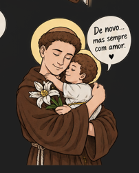
béé.
ACHADOS & PERDIDOS
PERDEU ALGUMA COISA?
Objeto?
Documento?
Chave?
Vaga para estacionar?
Antes de declarar oficialmente o desaparecimento, a aniversariante recomenda:
“SÃO LONGUINHO, SÃO LONGUINHO...”
Procedimento recomendado
3 pulinhos.↑ ↑ ↑
Taxa de sucesso
Surpreendentemente alta.
Área de atuação
Aparentemente ilimitada.
Atendimento
24 horas — ou até encontrar.
eu também estava perdida.
OS ASTROS FALARAM
VIRGEM ♍
ORGANIZAÇÃO
★★★★★
ATENÇÃO AOS DETALHES
★★★★★
CAPACIDADE DE PERCEBER COISA ERRADA
★★★★★
PACIÊNCIA COM GENTE DESORGANIZADA
★☆☆☆☆
ENERGIA PARA DANÇAR
★★★★★
PREVISÃO PARA O NOVO CICLO
Mercúrio indica um período favorável para novas histórias, bons encontros, muitas risadas, dança e momentos felizes.
Vênus também apresenta movimentações interessantes na área amorosa, mas informa que qualquer interessado deverá passar pelo processo seletivo publicado na seção de Classificados.
NÚMEROS DA SORTE: 04 • 09 • 40
LEVANTAMENTO AFETIVO INTERNACIONAL
BINGO DOS MARIDOS
Cinco maridos, quatro nacionalidades e signos suficientes para a redação abrir uma investigação.
Levantamento editorial dos cinco maridos
EDIÇÃO
NACIONALIDADE / ORIGEM
SIGNO
MARIDO01
BRASILEIRO
PEIXES
MARIDO02
JAPONÊS
?
SIGNO NÃO LOCALIZADO NOS ARQUIVOS.
MARIDO03
PERNAMBUCANO
TOURO
MARIDO04
CHILENO
AQUÁRIO
MARIDO05
ITALIANO
SAGITÁRIO
CARTELA DA RÚBIA
BRASIL
JAPÃO
CHILE
ITÁLIA
PEIXES
TOURO
AQUÁRIO
SAGITÁRIO
GÊMEOSDeus nos livre
ESCORPIÃOInvestigação preventiva
BINGO!
Rúbia não colecionou ex-maridos. Colecionou experiências multiculturais.
“A essa altura eu já estou pedindo milhas.”
Notas da redação
FONTES: fofocas internas, convivência e observação cuidadosa.
PREVISÃO DO TEMPO: possibilidade de bolo, dança e diversão até o final do dia.
COTAÇÃO DO DIA: 1 Rúbia = valor incalculável.
COMUNICADO: trabalhar no próprio aniversário deveria ser proibido.
ERRATA: a redação tentou encontrar defeitos na aniversariante. A investigação continua.
TÍTULO NÃO OFICIAL: melhor chefinha do mundo todinho.
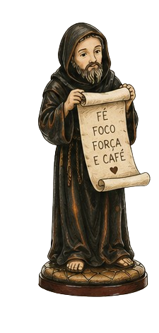
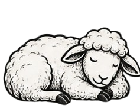
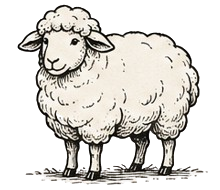
✓ CASO ENCERRADOTodas as ovelhas foram localizadas.São Longuinho agradece a colaboração. 😂
EDITORIAL
UMA NOTÍCIA QUE VALE A PENA PUBLICAR
Por Carol Garcez
Tem gente que a gente conhece pelo cargo.
E tem gente que, com o tempo, acaba virando muito mais do que isso.
Entre trabalho, conversas, histórias, risadas, alguns problemas para resolver e provavelmente algumas coisas perdidas pelo caminho, eu tive a sorte de conhecer a Rúbia além da “chefinha”.
E talvez você não perceba, mas é muito mais forte, querida e admirada do que imagina.
Talvez seja justamente por isso que um simples “feliz aniversário” tenha parecido pouco.
Então resolvi fazer o que aparentemente considero uma reação perfeitamente normal:
fundar um jornal inteiro em sua homenagem.
Brincadeiras à parte, essa edição é só um jeito diferente de registrar um pouquinho de tudo aquilo que faz você ser você: sua história, suas conquistas, suas manias e essas pequenas coisas que fazem a gente gostar tanto de ter você por perto.
Que esse novo ciclo renda muitas histórias boas para as próximas edições. Que tenha saúde, carinho, diversão, dança, conquistas e tudo aquilo que você merece.

A comentarista Rúbia tem apenas uma crítica: